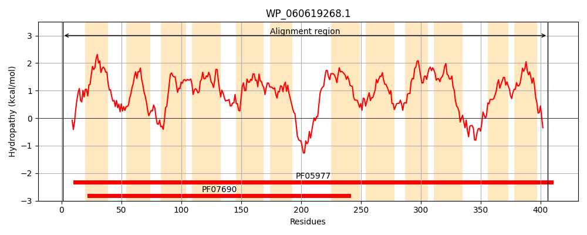
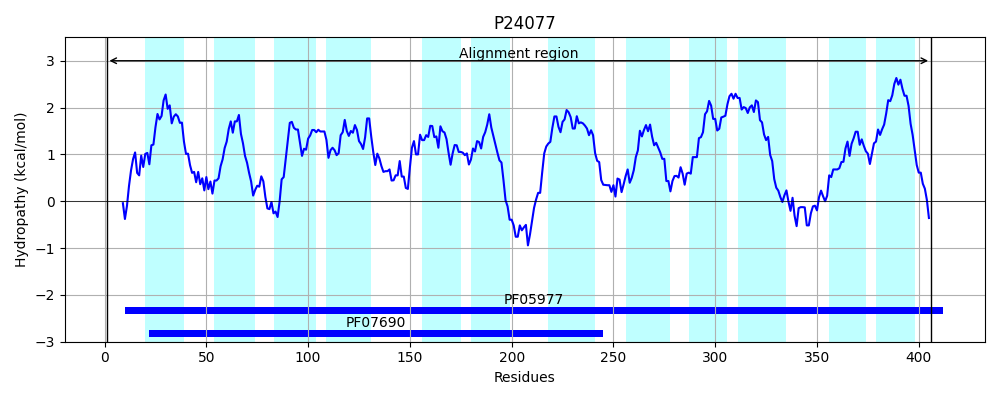
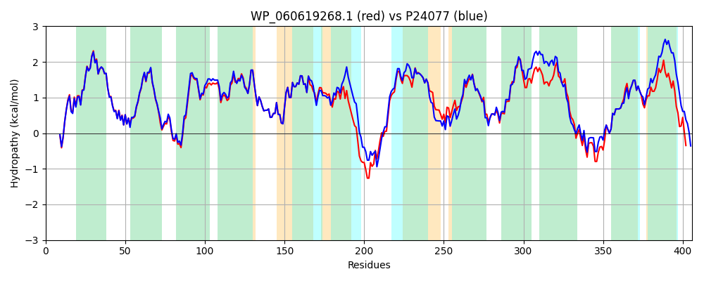

Hit Accession: P24077
Hit TCID: 2.A.1.38.1
Hit Description: gnl|BL_ORD_ID|9484 gnl|TC-DB|P24077|2.A.1.38.1 Hypothetical membrane protein P43 - Escherichia coli.
Mach Len: 406
e:0.000000
Query TMS Count : 12
Hit TMS Count: 12
TMS-Overlap Score: 11.900000
Predicted Substrates:CHEBI:4799;enterobactin, CHEBI:22599;arabinose
BLAST Alignment:
Score: 1770 , Bit scores: 686 bits, E-value: 0.0e+00, Alignment length: 406, Percentage identity: 85
Query: 1 MNRQSWLLNLSLLKTHPAFRAVFIARFISILSLGLLGVAIPVQIQMMTHSTWQVGLSVTLTGASMFVGLMVGGVLADRYERKRLILLARGTCGVGFVGLCLNALLPEPSLAAIYLLGIWDGFFASLGVTALLAATPALVGRENLMQAGAITMLTVRLGSVISPMIGGLLLATGGVSWNFGLAAAGTFITTLTLLRLPQLPPPPQPREHPLRSLLAGLTFLCQSPLIGGIALLGGLLTMASAVRVLYPALAGSWQMSAGQIGLLYAAIPLGAALGALTSGQLAQTVRPGALMLATTVGSFVAIALFSLMPHWALGALCLALFGWLSAISSLLQYTLIQTQTPENMLGRINGLWTAQNVTGDAIGAALLGGLGAVMTPAASASASGWALALVGVLLVGLLRELRRFQR 406
MN+QSWLLNLSLLKTHPAFRAVF+ARFISI+SLGLLGVA+PVQIQMMTHSTWQVGLSVTLTG +MFVGLMVGGVLADRYERK++ILLARGTCG+GF+GLCLNALLPEPSL AIYLLG+WDGFFASLGVTALLAATPALVGRENLMQAGAITMLTVRLGSVISPMIGGLLLATGGV+WN+GLAAAGTFIT L LL LP LPPPPQPREHPL+SLLAG FL SPL+GGIALLGGLLTMASAVRVLYPALA +WQMSA QIG LYAAIPLGAA+GALTSG+LA + RPG LML +T+GSF+AI LF LMP W LG +CLALFGWLSA+SSLLQYT++QTQTPE MLGRINGLWTAQNVTGDAIGAALLGGLGA+MTP ASASASG+ L ++GVLL+ +L ELR F++
Sbjct: 1 MNKQSWLLNLSLLKTHPAFRAVFLARFISIVSLGLLGVAVPVQIQMMTHSTWQVGLSVTLTGGAMFVGLMVGGVLADRYERKKVILLARGTCGIGFIGLCLNALLPEPSLLAIYLLGLWDGFFASLGVTALLAATPALVGRENLMQAGAITMLTVRLGSVISPMIGGLLLATGGVAWNYGLAAAGTFITLLPLLSLPALPPPPQPREHPLKSLLAGFRFLLASPLVGGIALLGGLLTMASAVRVLYPALADNWQMSAAQIGFLYAAIPLGAAIGALTSGKLAHSARPGLLMLLSTLGSFLAIGLFGLMPMWILGVVCLALFGWLSAVSSLLQYTMLQTQTPEAMLGRINGLWTAQNVTGDAIGAALLGGLGAMMTPVASASASGFGLLIIGVLLLLVLVELRHFRQ 406 | Protein Hydropathy Plots: |
|---|
|  |  |
Pairwise Alignment-Hydropathy Plot:
|
|---|
|  |